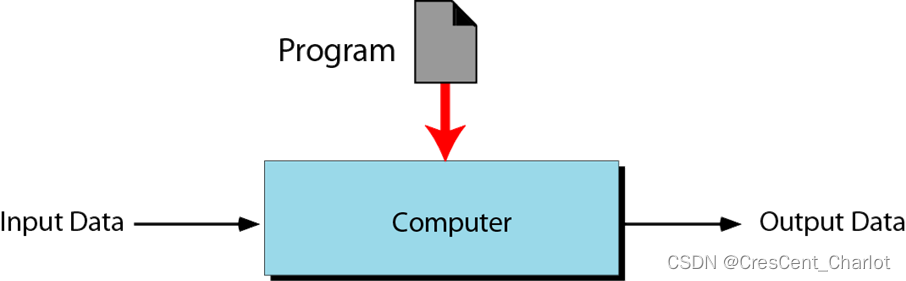
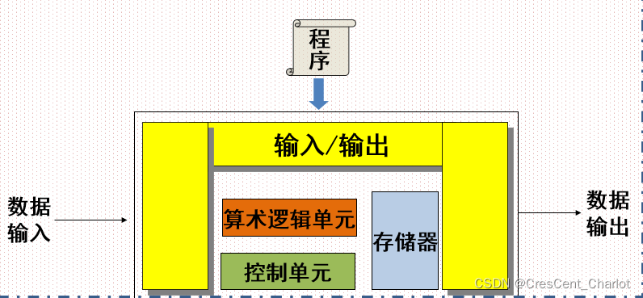

BJFU|计算机导论（21下）第一章-初识计算机
前言：
计算机导论是笔者大学期间第一门结课的专业课，也是在这门课上笔者取得了大学生活中第一次满分。笔者近日整理文件发现笔记数十页，不忍抛弃，因稍加整理后发布于此。
内容共八章，涵盖了计算机类专业学生的基础知识。**对于行业初学者，可以提供一个专业的视角以便后续选择进一步发展方向；对于业外人士，也可做科普性质文章对待。**需要注意的是，笔记并不等于确切的、已知的考点，请校友（尤其是同门师弟师妹们）理性对待此资料，认真听讲，认真复习。
后续章节将会逐步更新，请各位读者静候。
考点整理：
**为什么说人从本质上是一种“懒惰”而又富于进取的高级动物：**1.计算能力是人的基本能力之一，是人的智力的主要特征。2.从发明机器的初衷分析，计算机的始祖是计算工具。3.计算机是人类不断追求计算速度的产物。4.“自动计算”是人类进化过程中的梦想。5.更快的计算是人类文明的标志和永恒的追求。
计算机硬件的发展趋势：体积变小、耗电量降低、可靠性提升、成本降低、速度提高。
计算机特点：计算速度快、计算精度高、记忆能力强、高度自动化、可靠性高。
计算机工作原理：存储程序控制。
计算机概念：可编程自动化计算设备。
计算机应用：科学计算、数据处理、过程控制、计算机辅助系统、人工智能、计算机通信和多媒体应用等。
计算机发展趋势：微型化、高速化、网络化、智能化、多媒体化。
计算机的两个基本能力：一是能够存储程序，二是能够自动地执行程序。
根据计算机采用的物理器件将计算机划分为四代：电子管、晶体管、中小规模集成电路、大超大规模集成电路。
计算机的常用分类方法是计算机的综合性能指标。
按原理分：数字式电子计算机、模拟式电子计算机、混合式电子计算机。
按用途分：通用计算机和专用计算机。
第一台计算机****ENIAC，电子数字积分计算机，由美国宾夕法尼亚大学于1946年研制。我国第一台电子计算机103机，第一台大型晶体管计算机109乙，功勋机109丙。
基于图灵模型的计算机：处理相同的程序不同的数据、处理不同的程序相同的数据。

基于冯诺依曼模型的计算机：基本思想是使用二进制和存储程序；基本组成部分是运算器、控制器、存储器、输入装置、输出装置。

计算机中采用的基本逻辑电路主要有门电路及触发器
应用计算思维解决实际问题：
抽象（将问题抽象成数据符号化表示）
理论（寻找或证明问题相关的理论以便更好解决问题）
设计（设计并实现算法或系统以解决问题）
**计算机发明在西方而非中国的原因：**工业革命、战争推动；当时的中国是农业国；计算机基础是编码，中文注重逻辑运算。
 支付宝打赏
支付宝打赏
 微信打赏
微信打赏
如果觉得好用请支持我